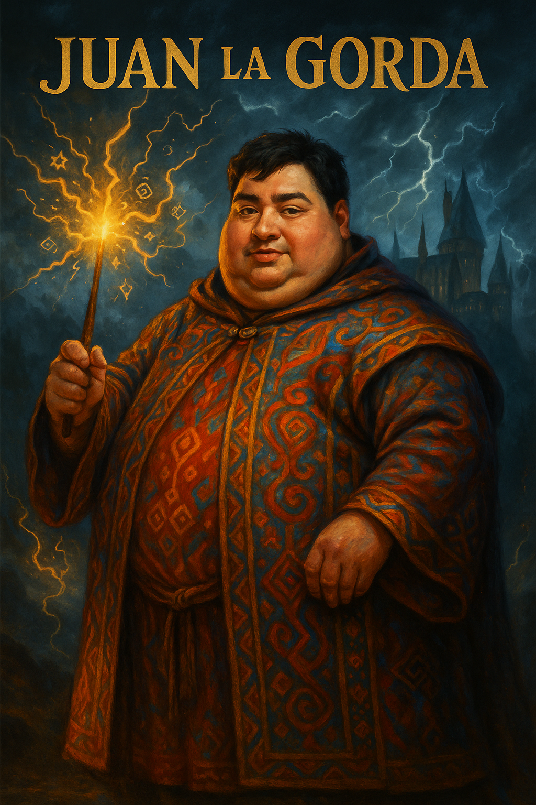
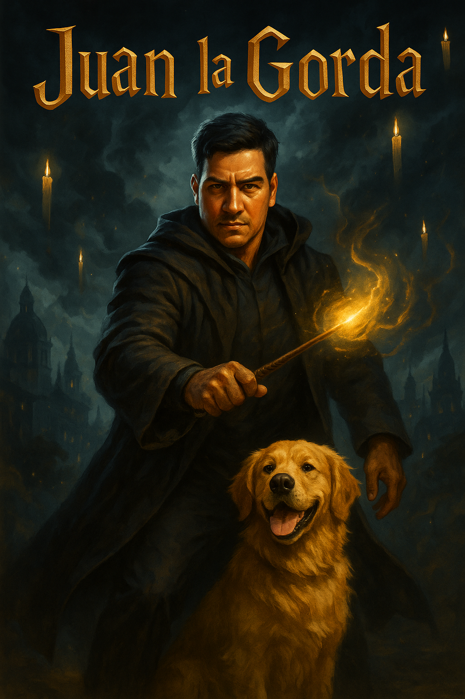

En las profundidades de las montañas de Monserrate, nació una bruja como ninguna otra: Juan la Gorda. Con poderes ancestrales, fuerza sobrenatural y un dominio inigualable de la magia negra y blanca, se ha convertido en una leyenda viviente en Bogotá.
Se dice que incluso Lord Voldemort temía pronunciar su nombre. En un duelo épico, cuando las nubes cubrieron la ciudad y los rayos iluminaban la Candelaria, Juan la Gorda se enfrentó al mago tenebroso y lo venció sin esfuerzo, usando solo una mirada fulminante y su varita hecha de madera de guayacán encantado.
Hoy en día, Juan la Gorda protege a los inocentes, enseña magia en secreto, y guarda los secretos más antiguos del universo mágico colombiano.
 